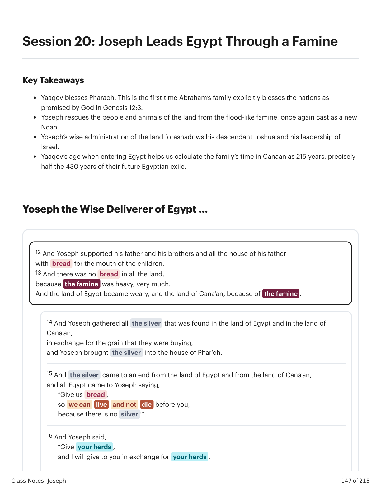
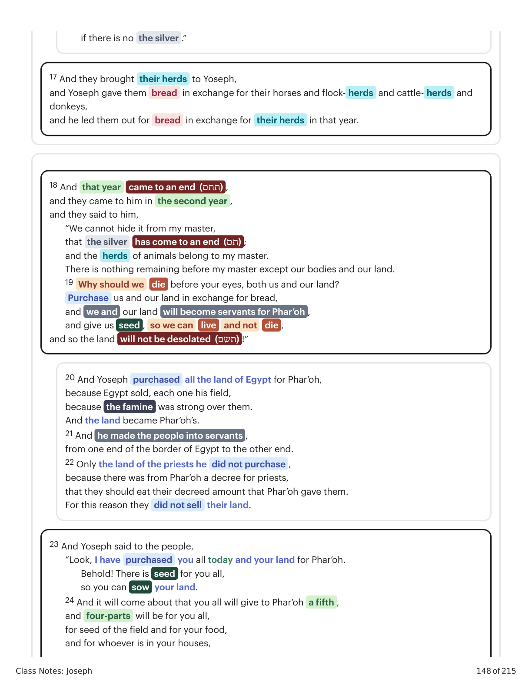
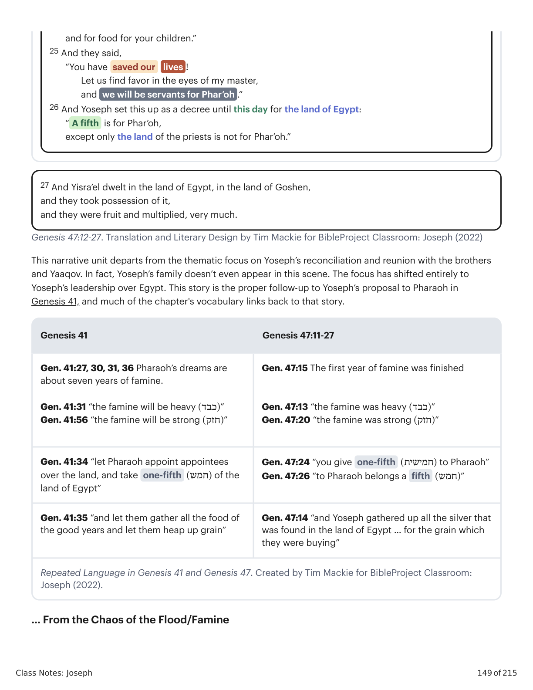
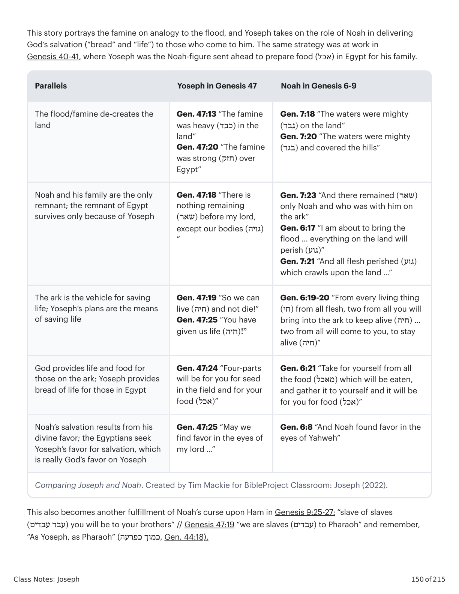
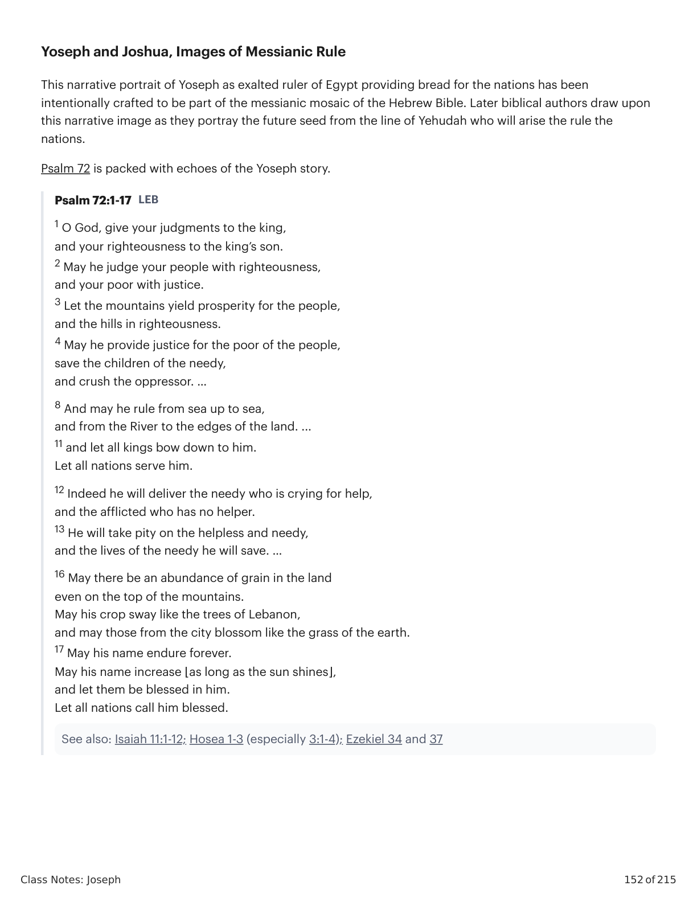

José Guia o Egito através de uma FomeJoseph Leads Egypt Through a Famine
Class Notes: Joseph
147 of 215
Session 20: Joseph Leads Egypt Through a Famine
Key Takeaways
Yaaqov blesses Pharaoh. This is the first time Abraham’s family explicitly blesses the nations as
promised by God in Genesis 12:3.
Yoseph rescues the people and animals of the land from the flood-like famine, once again cast as a new
Noah.
Yoseph’s wise administration of the land foreshadows his descendant Joshua and his leadership of
Israel.
Yaaqov’s age when entering Egypt helps us calculate the family’s time in Canaan as 215 years, precisely
half the 430 years of their future Egyptian exile.
Yoseph the Wise Deliverer of Egypt ...
12 And Yoseph supported his father and his brothers and all the house of his father
with bread for the mouth of the children.
13 And there was no bread in all the land,
because the famine was heavy, very much.
And the land of Egypt became weary, and the land of Cana’an, because of the famine .
14 And Yoseph gathered all the silver that was found in the land of Egypt and in the land of
Cana’an,
in exchange for the grain that they were buying,
and Yoseph brought the silver into the house of Phar’oh.
15 And the silver came to an end from the land of Egypt and from the land of Cana’an,
and all Egypt came to Yoseph saying,
“Give us bread ,
so we can
live
and not
die before you,
because there is no silver !”
16 And Yoseph said,
“Give your herds ,
and I will give to you in exchange for your herds ,

Gênesis X:Y. Tradução e Design Literário por Tim Mackie para BibleProject Classroom: José (2021).Genesis X:Y. Translation and Literary Design by Tim Mackie for BibleProject Classroom: Joseph (2021).
Class Notes: Joseph
148 of 215
if there is no the silver .”
17 And they brought their herds to Yoseph,
and Yoseph gave them bread in exchange for their horses and flock- herds and cattle- herds and
donkeys,
and he led them out for bread in exchange for their herds in that year.
18 And that year
came to an end (תתם) ,
and they came to him in the second year ,
and they said to him,
“We cannot hide it from my master,
that the silver
has come to an end (תם) ;
and the herds of animals belong to my master.
There is nothing remaining before my master except our bodies and our land.
19 Why should we
die before your eyes, both us and our land?
Purchase us and our land in exchange for bread,
and we and our land will become servants for Phar’oh ,
and give us seed , so we can
live
and not
die ,
and so the land will not be desolated (תשם) !”
20 And Yoseph purchased all the land of Egypt for Phar’oh,
because Egypt sold, each one his field,
because the famine was strong over them.
And the land became Phar’oh’s.
21 And he made the people into servants ,
from one end of the border of Egypt to the other end.
22 Only the land of the priests he did not purchase ,
because there was from Phar’oh a decree for priests,
that they should eat their decreed amount that Phar’oh gave them.
For this reason they did not sell their land.
23 And Yoseph said to the people,
“Look, I have purchased you all today and your land for Phar’oh.
Behold! There is seed for you all,
so you can sow your land.
24 And it will come about that you all will give to Phar’oh a fifth ,
and four-parts will be for you all,
for seed of the field and for your food,
and for whoever is in your houses,

Gênesis X:Y. Tradução e Design Literário por Tim Mackie para BibleProject Classroom: José (2021).Genesis X:Y. Translation and Literary Design by Tim Mackie for BibleProject Classroom: Joseph (2021).
Class Notes: Joseph
149 of 215
Genesis 47:12-27. Translation and Literary Design by Tim Mackie for BibleProject Classroom: Joseph (2022)
This narrative unit departs from the thematic focus on Yoseph’s reconciliation and reunion with the brothers
and Yaaqov. In fact, Yoseph’s family doesn’t even appear in this scene. The focus has shifted entirely to
Yoseph’s leadership over Egypt. This story is the proper follow-up to Yoseph’s proposal to Pharaoh in
Genesis 41, and much of the chapter's vocabulary links back to that story.
Genesis 41
Genesis 47:11-27
Gen. 41:27, 30, 31, 36 Pharaoh’s dreams are
about seven years of famine.
Gen. 41:31 “the famine will be heavy )(כבד”
Gen. 41:56 “the famine will be strong )(חזק”
Gen. 47:15 The first year of famine was finished
Gen. 47:13 “the famine was heavy )(כבד”
Gen. 47:20 “the famine was strong )(חזק”
Gen. 41:34 “let Pharaoh appoint appointees
over the land, and take one-fifth )(חמש of the
land of Egypt”
Gen. 47:24 “you give one-fifth )(חמישית to Pharaoh”
Gen. 47:26 “to Pharaoh belongs a fifth )(חמש”
Gen. 41:35 “and let them gather all the food of
the good years and let them heap up grain”
Gen. 47:14 “and Yoseph gathered up all the silver that
was found in the land of Egypt … for the grain which
they were buying”
Repeated Language in Genesis 41 and Genesis 47. Created by Tim Mackie for BibleProject Classroom:
Joseph (2022).
… From the Chaos of the Flood/Famine
and for food for your children.”
25 And they said,
“You have saved our
lives !
Let us find favor in the eyes of my master,
and we will be servants for Phar’oh .”
26 And Yoseph set this up as a decree until this day for the land of Egypt:
“ A fifth is for Phar’oh,
except only the land of the priests is not for Phar’oh.”
27 And Yisra’el dwelt in the land of Egypt, in the land of Goshen,
and they took possession of it,
and they were fruit and multiplied, very much.

Gênesis X:Y. Tradução e Design Literário por Tim Mackie para BibleProject Classroom: José (2021).Genesis X:Y. Translation and Literary Design by Tim Mackie for BibleProject Classroom: Joseph (2021).
Class Notes: Joseph
150 of 215
This story portrays the famine on analogy to the flood, and Yoseph takes on the role of Noah in delivering
God’s salvation (“bread” and “life”) to those who come to him. The same strategy was at work in
Genesis 40-41, where Yoseph was the Noah-figure sent ahead to prepare food (אכל) in Egypt for his family.
Parallels
Yoseph in Genesis 47
Noah in Genesis 6-9
The flood/famine de-creates the
land
Gen. 47:13 “The famine
was heavy )(כבד in the
land”
Gen. 47:20 “The famine
was strong )(חזק over
Egypt”
Gen. 7:18 “The waters were mighty
)(גבר on the land”
Gen. 7:20 “The waters were mighty
)(בגר and covered the hills”
Noah and his family are the only
remnant; the remnant of Egypt
survives only because of Yoseph
Gen. 47:18 “There is
nothing remaining
)(שאר before my lord,
except our bodies )(גויה
”
Gen. 7:23 “And there remained )(שאר
only Noah and who was with him on
the ark”
Gen. 6:17 “I am about to bring the
flood … everything on the land will
perish )(גוע”
Gen. 7:21 “And all flesh perished )(גוע
which crawls upon the land …”
The ark is the vehicle for saving
life; Yoseph’s plans are the means
of saving life
Gen. 47:19 “So we can
live )(חיה and not die!”
Gen. 47:25 “You have
given us life )”!(חיה
Gen. 6:19-20 “From every living thing
)(חי from all flesh, two from all you will
bring into the ark to keep alive )(חיה …
two from all will come to you, to stay
alive )(חיה”
God provides life and food for
those on the ark; Yoseph provides
bread of life for those in Egypt
Gen. 47:24 “Four-parts
will be for you for seed
in the field and for your
food )(אכל”
Gen. 6:21 “Take for yourself from all
the food )(מאכל which will be eaten,
and gather it to yourself and it will be
for you for food )(אכל”
Noah’s salvation results from his
divine favor; the Egyptians seek
Yoseph’s favor for salvation, which
is really God’s favor on Yoseph
Gen. 47:25 “May we
find favor in the eyes of
my lord …”
Gen. 6:8 “And Noah found favor in the
eyes of Yahweh”
Comparing Joseph and Noah. Created by Tim Mackie for BibleProject Classroom: Joseph (2022).
This also becomes another fulfillment of Noah’s curse upon Ham in Genesis 9:25-27: “slave of slaves
)(עבד עבדים you will be to your brothers” // Genesis 47:19 “we are slaves )(עבדים to Pharaoh” and remember,
“As Yoseph, as Pharaoh” (כמוך כפרעה, Gen. 44:18).

Gênesis X:Y. Tradução e Design Literário por Tim Mackie para BibleProject Classroom: José (2021).Genesis X:Y. Translation and Literary Design by Tim Mackie for BibleProject Classroom: Joseph (2021).
Class Notes: Joseph
151 of 215
Joshua, the Son of Yoseph, and the Priestly Lands
Notice how Yoseph purchases the land on behalf of Pharaoh and then incorporates it into the kingdom’s
property so that the entire population become Egypt’s servants. However, the narrator highlights how the
land that belongs to the priests is not incorporated but rather set apart.
This seemingly random detail is a forward anticipation to the future arrangement of the promised land for the
tribes of Israel. In the Joshua scroll, we find Joshua, a son of Ephrayim-Yoseph, providing the land allotments
to the tribes of his kinsmen, except for the priests, whose land is never to be sold to anyone.
Numbers 35:2-3, 6 Instructor's Translation
2 Command the sons of Israel that they give to the Levites from the inheritance of their possession cities to
live in; and you shall give to the Levites pasture lands around the cities.
3 The cities shall be theirs to live in; and their pasture lands shall be for their cattle and for their herds and
for all their beasts. …
6 The cities which you shall give to the Levites shall be the six cities of refuge, which you shall give for the
manslayer to flee to; and in addition to them you shall give forty-two cities.
Deuteronomy 18:1-5 Instructor's Translation
1 The Levitical priests, the whole tribe of Levi, shall have no portion or inheritance with Israel; they shall eat
the Yahweh’s offerings by fire and his portion.
2 They shall have no inheritance among their brothers;
Yahweh is their inheritance, as he promised them.
3 Now this shall be the priests’ due from the people, from those who offer a sacrifice, either an ox or a
sheep, of which they shall give to the priest the shoulder and the two cheeks and the stomach.
4 You shall give him the first fruits of your grain, your new wine, and your oil, and the first shearing of your
sheep.
5 For Yahweh your Elohim has chosen him and his sons from all your tribes, to stand and serve in the name
of the LORD forever.
Joshua 13:1-2, 14 Instructor's Translation
1 Now Joshua was old and advanced in years when the LORD said to him, “You are old and advanced in
years, and very much of the land remains to be possessed.
2 This is the land that remains: all the regions of the Philistines and all those of the Geshurites;”
14 Only to the tribe of Levi he did not give an inheritance; the offerings by fire to Yahweh, the God of Israel,
are their inheritance, as he spoke to him.
Joshua 13:32-33 Instructor's Translation
32 These are the territories which Moses apportioned for an inheritance in the plains of Moab, beyond the
Jordan at Jericho to the east.
33 But to the tribe of Levi, Moses did not give an inheritance; Yahweh, the God of Israel, is their
inheritance, as he had promised to them.
Class Notes: Joseph
152 of 215
Yoseph and Joshua, Images of Messianic Rule
This narrative portrait of Yoseph as exalted ruler of Egypt providing bread for the nations has been
intentionally crafted to be part of the messianic mosaic of the Hebrew Bible. Later biblical authors draw upon
this narrative image as they portray the future seed from the line of Yehudah who will arise the rule the
nations.
Psalm 72 is packed with echoes of the Yoseph story.
Psalm 72:1-17 LEB
1 O God, give your judgments to the king,
and your righteousness to the king’s son.
2 May he judge your people with righteousness,
and your poor with justice.
3 Let the mountains yield prosperity for the people,
and the hills in righteousness.
4 May he provide justice for the poor of the people,
save the children of the needy,
and crush the oppressor. …
8 And may he rule from sea up to sea,
and from the River to the edges of the land. ...
11 and let all kings bow down to him.
Let all nations serve him.
12 Indeed he will deliver the needy who is crying for help,
and the afflicted who has no helper.
13 He will take pity on the helpless and needy,
and the lives of the needy he will save. …
16 May there be an abundance of grain in the land
even on the top of the mountains.
May his crop sway like the trees of Lebanon,
and may those from the city blossom like the grass of the earth.
17 May his name endure forever.
May his name increase ⌊as long as the sun shines⌋,
and let them be blessed in him.
Let all nations call him blessed.
See also: Isaiah 11:1-12; Hosea 1-3 (especially 3:1-4); Ezekiel 34 and 37

Gênesis X:Y. Tradução e Design Literário por Tim Mackie para BibleProject Classroom: José (2021).Genesis X:Y. Translation and Literary Design by Tim Mackie for BibleProject Classroom: Joseph (2021).
Class Notes: Joseph
153 of 215
Reflection Question
Yoseph shrewdly governs the people of Egypt, but in the process, all the money, livestock, land, and even the
people belong to Pharaoh. How can we discern if the narrative presents this as a blessing or an abuse of
power?
Class Notes: Joseph
154 of 215
Module 6: Jacob’s Song of
Blessing
SESSIONS 21-25
Jacob looks forward to a future for his sons full of blessings and challenges. Discover
how his words foreshadow the future of his descendants.